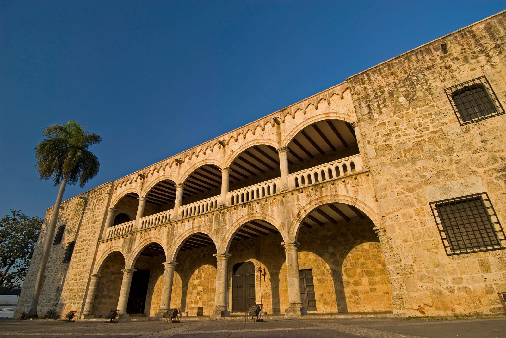

Santo Domingo
La isla Hispaniola, donde se ubica la República Dominicana, fue descubierta por Cristóbal Colón, durante su primer viaje al Nuevo Mundo, el 5 de diciembre de 1492. Fue colonizada por los españoles, quienes dejaron su huella manifestada a través de monumentos, fortificaciones, iglesias , así como el exterminio de la raza taina, que se extinguió por completo en menos de trece años, siendo reemplazada por esclavos africanos utilizados en la industria azucarera. Luego vino la colonia Saint Domingue en la parte occidental de la colonia de Santo Domingo, cuyas relaciones se caracterizaron por constantes luchas por el dominio territorial. La nueva colonia quiso apoderarse de la parte oriental y cuando logró liberarse de Francia en 1804, invadió la colonia de Santo Domingo hasta que obtuvo su independencia el 27 de febrero del año 1844 y nació como nación bajo el nombre de República Dominicana.
The island of Hispaniola, where the Dominican Republic is located, was discovered by Christopher Columbus, during his first trip to the New World, on December 5, 1492. It was colonized by the Spanish, who left their mark manifested through monuments, fortifications, churches, as well as the extermination of the Taino race, which became completely extinct in less than thirteen years, being replaced by African slaves used in the sugar industry. Then came the Saint Domingue colony in the western part of the Santo Domingo colony, whose relations were characterized by constant struggles for territorial control. The new colony wanted to seize the eastern part and when it managed to free itself from France in 1804, it invaded the colony of Santo Domingo until it obtained its independence on February 27, 1844 and was born as a nation under the name of the Dominican R
Este es uno de los museos más populares de la Ciudad Colonial es también el más impresionante en términos arquitectónicos. Terminado alrededor del año 1512, este palacio de estilo gótico y renacentista fue la casa de Diego Colón, hijo de Cristóbal Colón, y su esposa María de Toledo, sobrina del rey Fernando de España. Con vistas a la Plaza de España por un lado y al río Ozama por el otro, es la residencia virreinal más antigua de América y el primer palacio fortificado, convertido en un museo que exhibe muebles, arte, instrumentos musicales y armas del siglo XVI. Escaleras de caracol conducen a las bien conservadas habitaciones de la pareja, y al lujoso salón de recepción iluminado por candelabros de cristal donde se celebraban los eventos de la aristocracia española.
This is one of the most popular museums in the Colonial City is also the most impressive in architectural terms. Completed around 1512, this Gothic-Renaissance palace was the home of Diego Colón, son of Christopher Columbus, and his wife María de Toledo, niece of King Ferdinand of Spain. Overlooking the Plaza de España on one side and the Ozama River on the other, it is the oldest viceregal residence in the Americas and the first fortified palace, turned into a museum displaying 16th-century furniture, art, musical instruments and weapons. Spiral staircases lead to the well-preserved rooms of the couple, and to the luxurious reception room lit by crystal chandeliers where events for the Spanish aristocracy were held.